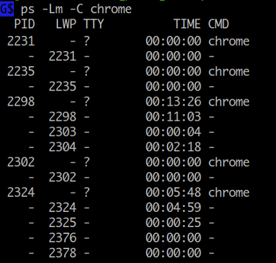

Process Creation
CPU 는 기계이므로 프로세스라는 개념을 모르는 것과 같습니다. 전부 OS 프로그래머에 의해서 프로세스라는 개념도 만들어지는 것입니다. 똑같은 mov, add, sub ... instructions 이 CPU 에서 실행 중이더라도 어떤 순간에는 process 1 이 되고 어떤 순간에는 process 2 가 되고 또는 OS 가 실행하는 코드가 됩니다.
이번에는 다음과 같은 의문사항들에 대해 알아보도록 하겠습니다.
subshell 에서는 왜 parent shell 과 동일한 환경을 갖게되며 export 하지도 않은 변수, 함수를 그대로 사용할 수 있는가?
그리고 child process 에서는 왜 export 한 변수, 함수만 사용할 수 있는가?
변수를 export 했는데 터미널을 새로 열면 왜 값이 보이지 않는가?
subshell, child process 에서 설정한 변수는 왜 parent shell 에는 적용되지 않는가?
또한 parent shell 에서 값을 변경하면 왜 실행 중인 subshell, child process 에 적용되지 않는가?
왜 현재 shell 의 변수값을
( )$( )` `|&에서 변경할 수 없는가?
Process 주소공간 과 PCB

위 그림에서 1번은 프로그램( 명령 ) 을 실행했을때 메모리상의 주소공간을 나타냅니다. 만약에 컴퓨터 시스템에서 하나의 프로그램만 실행한다면 저 주소공간 하나 외에 다른것은 필요하지 않을것입니다. 하지만 실제로는 여러개의 프로세스가 동시에 실행되므로 프로세스들을 관리하고 스케줄하기 위해 Operating System 이 필요하게 됩니다. 이때 OS 는 프로세스의 PID, PPID 는 무엇이고, 현재 상태( stopped, running ... )는 어떻게 되는지, 사용중인 파일들은 어떻게 되고, cpu 사용시간은 얼마나 되는지와 같은 정보들을 기록하고 관리하는데 이때 사용되는 구조체가 그림에서 2번인 PCB (Process Control Block) 입니다. PCB 는 항목수가 140 개가 넘을 정도로 큰 구조체 이며 특정 프로세스에 대한 모든 정보가 담겨져 있다고 할 수 있습니다.
Shell 을 사용하면서 설정, 변경하게 되는 변수, 함수, 옵션설정등 프로그램에 관련된 사항은 모두 1번 프로세스 주소공간에 위치합니다. 프로세스 주소공간은 메모리 내에서 다른 프로세스 주소공간에 대해 각각 독립적으로 존재하므로 프로세스 A 에서 변수값을 설정, 변경해도 그상태가 다른 프로세스의 주소공간에 영향을 미치지 않습니다. 따라서 parent shell 에서 설정한 변수값이라도 그값이 subshell, child 프로세스에 적용되지 않으며, 또한 subshell, child 프로세스 에서 변경한 값도 parent shell 프로세스에 적용되지 않게 됩니다.
( ) $( ) ` ` | & 에서 설정한 값들은 subshell 상에서 설정한 값이므로 실행을 마치고 현재 shell 로 돌아오면 프로세스의 주소공간이 다시 바뀌게 되므로 설정한 값들이 존재하지 않게 되는 것입니다.
프로세스 간에 데이터를 전달하기 위해서는 파이프나 파일을 이용하거나 OS 에서 제공하는 shared memory, massage queue, socket 같은 IPC (Inter Process Communication) 방법을 사용합니다.
Process 생성 단계
프로세스 생성 단계를 살펴봄으로써 subshell 과 child process 의 차이점에 대해 알아보겠습니다.
여기서 사용된 fork, exec, exit, wait 은 OS 에서 제공하는 system call 함수입니다.

1. ls 명령 실행
2. fork 단계
fork 은 unix 에서 새로운 프로세스를 만드는 방법입니다. 새로운 프로세스가 생기는 것이므로 pid, ppid 가 변경된 것을 볼 수 있습니다 (4번). fork 은 현재 프로세스와 동일한 주소공간과 PCB 를 갖는 프로세스를 생성합니다. 그러므로 생성 초기에는 현재 bash shell 과 동일한 환경이라고 할 수 있습니다. 주소공간이 같으므로 $$ 나 $PPID 와 같은 변수 값들이 변경 없이 그대로 나오게 되고 export 하지도 않은 변수나 함수들도 사용할 수 있게 되는 것입니다. 이 상태가 바로 subshell 입니다. subshell 에서 명령이 실행될 때는 $BASHPID 가 새로 생성된 pid 로 설정되어 실행됩니다.
마찬가지로 awk 프로그램을 실행 중에 fork 을 하게 되면 현재 실행 중인 awk 프로그램과 동일한 상태의 프로세스가 생성되는 것입니다. [ 활용예 ]
3. exec 단계
새로운 프로세스가 생성된 상태에서 기존 프로그램의 주소공간을 삭제하고 새로 실행될 프로그램을 메모리로 로드하여 실행시키는 것이 exec 입니다. 위 그림에서 보면 기존의 bash 프로그램 주소공간이 exec 에 의해 ls 프로그램 주소공간으로 대체된 것을 볼 수 있습니다 (5번). 주소공간이 바뀌게 되므로 기존에 bash 프로그램에서 사용되던 변수들이나 함수들은 모두 사용할 수 없게 됩니다.
exec 함수를 실행할 때는 환경변수( export 한 변수, 함수 )를 인수로 전달하기 때문에 child process 에서 사용할 수 있게 됩니다. 현재 shell 에서 변수를 export 하였는데도 새로 터미널을 열었을때 보이지 않는 것은 새로 생성된 프로세스는 현재 shell 의 child process 가 아니기 때문입니다.
4. exit 단계
child 프로세스가 exit 함수를 실행하면 자신이 사용하던 모든 자원을 해제하고 종료하게 됩니다. 이때 종료 상태 값을 PCB 항목에 설정하는데 parent 프로세스는 wait 함수를 통해 값을 구할 수가 있습니다. child 프로세스가 종료하였는데도 parent 에서 wait 함수를 호출하지 않으면 child 프로세스는 OS 가 관리하는 프로세스 테이블에 계속 남아 있게 되는데 이 상태가 좀비에 해당합니다.
만약에 parent 프로세스가 child 보다 먼저 종료하게 된다면 child 프로세스는 pid 1번인 init 프로세스로 reparent 가되고 init 프로세스는 주기적으로 wait 함수를 호출하므로 프로세스 테이블에서 정리되게 됩니다.
5. continue
fork-exec
위에서 살펴본 바와 같이 shell 에서 명령을 실행하면 fork 에의해 새로 프로세스가 생성되고 exec 에의해 새로운 프로그램으로 주소공간이 대체되어 실행됩니다. 보통 fork-exec 이라고 말하는데 이 과정을 shell 에서 표현해보면 fork 은 subshell 에 해당하고 exec 은 exec builtin 명령으로 나타낼 수 있으므로 아래 두 명령은 실제 같은 결과를 갖게 됩니다.
$ /bin/date
Mon Dec 28 13:49:17 KST 2015
$ ( exec /bin/date )
Mon Dec 28 13:49:25 KST 2015
하지만 subshell 의 경우 내부적으로 subshell optimization 을 하기 때문에
아래 첫 번째의 경우 exec 을 사용하지 않아도
fork (subshell) fork exec 이 아닌 fork (subshell) exec 만 하게됩니다.
좀 더 자세한 내용은 별책부록 subshell 을 참고하세요
$ ( date ) # fork (subshell) exec
$ ( date; date ) # fork (subshell) fork exec exec
^^^^^^^^^^ ^^^^
첫번째 date 두번째 date
/usr/bin 디렉토리에 위치한 egrep 과 fgrep 명령은 shell 스크립트 파일인데
exec 을 활용하는 것을 볼 수 있습니다.
만약에 exec 을 사용하지 않는다면 /bin/sh 프로세스 아래 또 grep 프로세스가 생성돼서
실행되겠죠
$ cat /usr/bin/egrep $ cat /usr/bin/fgrep
#!/bin/sh #!/bin/sh
exec grep -E "$@" exec grep -F "$@"
man page 색상 넣기
# export 한 환경변수를 man "$@" 명령에만 적용하기 위해
# 함수를 정의할때 { ;} 대신에 ( ) subshell 을 사용
function man() (
export LESS_TERMCAP_md=$'\e[01;38;5;74m' # begin bold
export LESS_TERMCAP_us=$'\e[04;38;5;146m' # begin underline
export LESS_TERMCAP_ue=$'\e[0m' # end underline
export LESS_TERMCAP_mb=$'\e[0m' # begin blinking
# export LESS_TERMCAP_so=$'\e[0m' # begin standout-mode - info box
export LESS_TERMCAP_se=$'\e[0m' # end standout-mode
export LESS_TERMCAP_me=$'\e[0m' # end mode
man "$@" # 마지막 명령은 subshell optimization 에의해 또 fork 하지 않는다.
)
만약에 다음과 같이 man 명령과 동일한 이름의 스크립트 파일로 작성한다고 하면 이 경우에는
이미 스크립트 프로세스가 실행 중에 있고 /usr/bin/man 명령 이후에는 더 이상 실행할 명령이 없으므로
현재 스크립트 프로세스를 이용해 exec 으로 실행하는게 효율적이겠죠
$ cat man
#!/bin/bash
export LESS_TERMCAP_md=$'\e[01;38;5;74m'
export LESS_TERMCAP_us=$'\e[04;38;5;146m'
. . . .
. . . .
# /usr/bin/man "$@" <--- 실행을 위해 또 프로세스를 생성할 필요가 없다
exec /usr/bin/man "$@" <--- 현재 스크립트 프로세스를 이용해 실행
subshell 과 child process 구분
subshell 도 parent 프로세스에서 생성된 자신의 PID 를 갖는 child process 입니다. 하지만 exec 에 의해 생성된 프로세스와 구분하기 위해 분리하여 설명하였습니다.
Thread
워드프로세서나 웹브라우저 같은 프로그램을 실행하면 보통 내부적으로 여러 개의 스레드를 생성하여 사용합니다. 만약에 스레드라는 기능이 없어서 모두 프로세스로 실행해야 된다고 한다면, 프로세스는 독립적인 주소공간도 생성해야 하고 PCB 도 만들어야 하고 필요로 하는 정보와 리소스가 많습니다. 또한 프로세스들끼리 서로 데이터도 주고 받아야 할텐데 각기 주소공간이 독립적이라 IPC 방법을 이용해야 합니다.
thread 는 기존의 프로세스가 가지는 주소공간과 리소스를 공유하면서 OS 가 스케줄하고 관리하는데 필요한 최소한의 정보만을 가지고 프로세스(thread)를 만들어 사용할 수 있게 해줍니다. 스레드는 프로세스의 주소공간을 공유하므로 데이터를 주고받기 위해 따로 IPC 방법을 사용할 필요가 없습니다. 그냥 한 스레드가 global, static 변수에 값을 저장하면 다른 스레드가 변경된 값을 읽을 수가 있습니다.
아래 그림은 하나의 프로세스에서 실행되는 thread 들을 보여주는데요. 프로세스가 가지는 text, data, heap 주소공간과 Files, Locks, Sockets 같은 리소스들을 공유하면서 각자 실행에 필요한 stack 을 가지고 독립적으로 실행되는 것을 볼 수 있습니다. OS 가 스케줄하는 단위도 프로세스가 아니라 스레드 입니다. 그래서 스레드를 이용하면 각각의 cpu 코어에서 실행될 수 있습니다.

사실 프로세스도 하나의 스레드 입니다.
프로세스가 생성되면 스레드가 하나 생기는 것입니다.
스레드는 TID (Thread ID) 를 갖는데 TGID (Thread Group ID) 는 PID 와 같습니다.
다음은 ps 명령을 이용하여 chrome 브라우저의 PID 와 TID 를 조회하는 예인데요.
LWP ( Light Weight Process ) 로 표시되는 두번째 컬럼이 TID 인데 첫번째 값이 PID 와 같은 것을 알 수 있습니다.

TID 는 ps 명령의 H, -L, m, -m, -T 옵션을 이용해 조회해볼 수 있습니다.
타이틀 값이 LWP, SPID 로 나오는것이 TID 입니다.
# firefox 브라우저를 조회
$ ps -Lm `pgrep -f firefox`
PID LWP TTY STAT TIME COMMAND
1933 - ? - 9:20 /home/mug896/Programs/firefox/firefox
- 1933 - Sl 1:14 -
- 1941 - Sl 3:12 -
- 1942 - Sl 0:01 -
- 1943 - Sl 0:00 -
. . . .
. . . .
# PSR 컬럼은 스레드가 바운드된 cpu core 를 말함
$ ps -mo pid,tgid,tid,%cpu,psr,command -p `pgrep -f firefox`
PID TGID TID %CPU PSR COMMAND
1933 1933 - 2.8 - /home/mug896/Programs/firefox/firefox
- - 1933 0.3 3 -
- - 1941 0.9 4 -
- - 1942 0.0 2 -
- - 1943 0.0 5 -
- - 1944 0.0 5 -
- - 1946 0.0 4 -
- - 1947 0.0 1 -
. . . .
. . . .
/proc 파일 시스템의 task 디렉토리를 통해서도 알아볼 수 있습니다.
$ ls /proc/$PID/task/
19242/ 19244/ 19246/ 19248/ 19250/ 21141/ 21143/ # thread id
19243/ 19245/ 19247/ 19249/ 19258/ 21142/ 21305/
shell 에서는 기본적으로 명령 ( fork-exec 에 의해 생성되는 프로세스 ) 를 다루므로 thread 를 직접 생성하거나 컨트롤할 수 없습니다.
Quiz
시스템에서 생성할 수 있는 최대 스레드 개수는 어떻게 알 수 있을까요?
이것은 시스템에 설치되어 있는 메모리의 양에 영향을 받습니다.
$ cat /proc/sys/kernel/threads-max
126917
$ man proc | sed -n '/\/threads-max/{h; :X n; /\/proc/{g;p;Q}; H; bX}'
----------------------------------------------------------------------
# 현재 시스템에 생성되어 있는 전체 스레드 개수
$ ps ax -L --no-headers | wc -l
1915
# nlwp (Number of Light Weight Processes) 크기 순서로 출력
$ ps ax -o pid,nlwp,cmd | sort -nr -k2,2 | less
# 특정 프로세스가 사용하고 있는 스레드 개수
$ ps -o thcount= 19783 # 또는 thcount 대신에 nlwp, 등호(=) 는 헤더 출력을 방지하는 역할
73
$ grep -i threads /proc/19783/status
Threads: 73
# 특정 프로세스가 사용중인 모든 스레드 출력
$ ps -L 19783